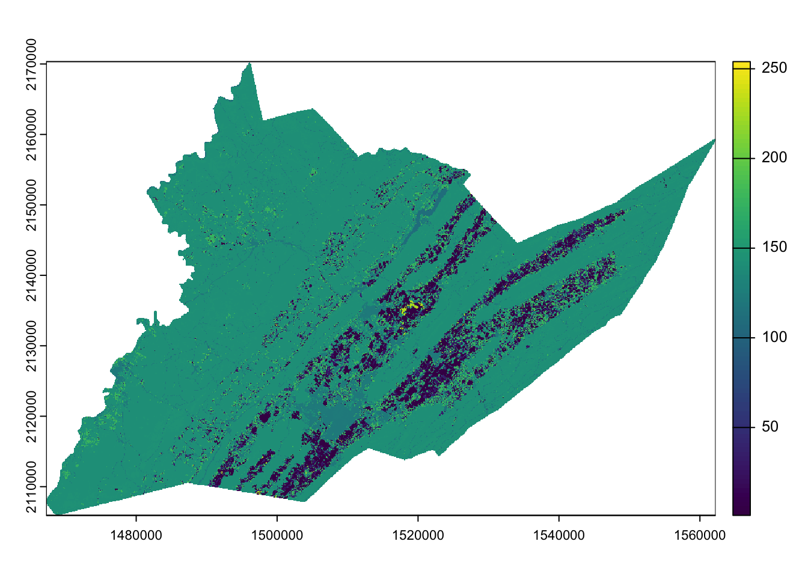
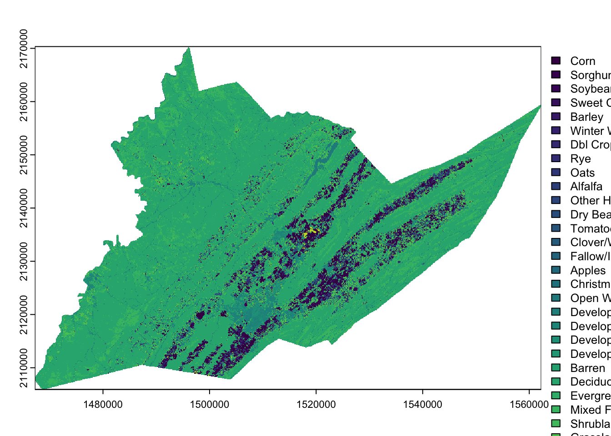
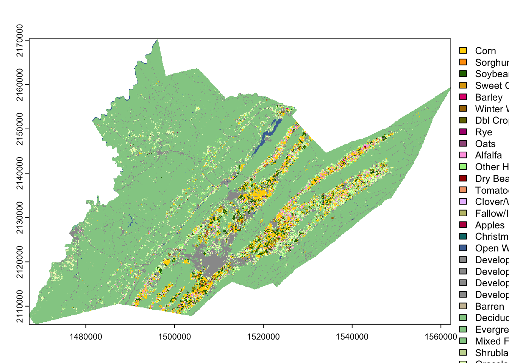
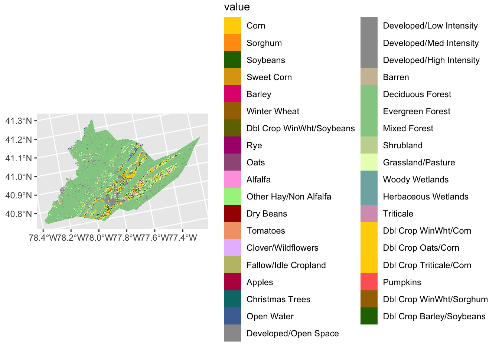
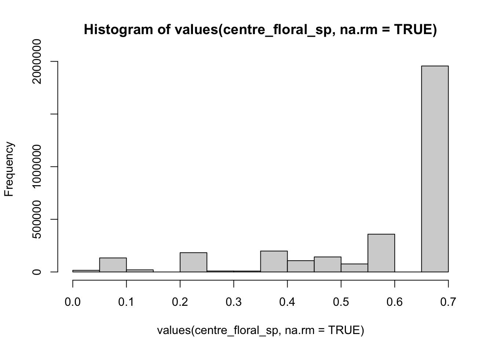
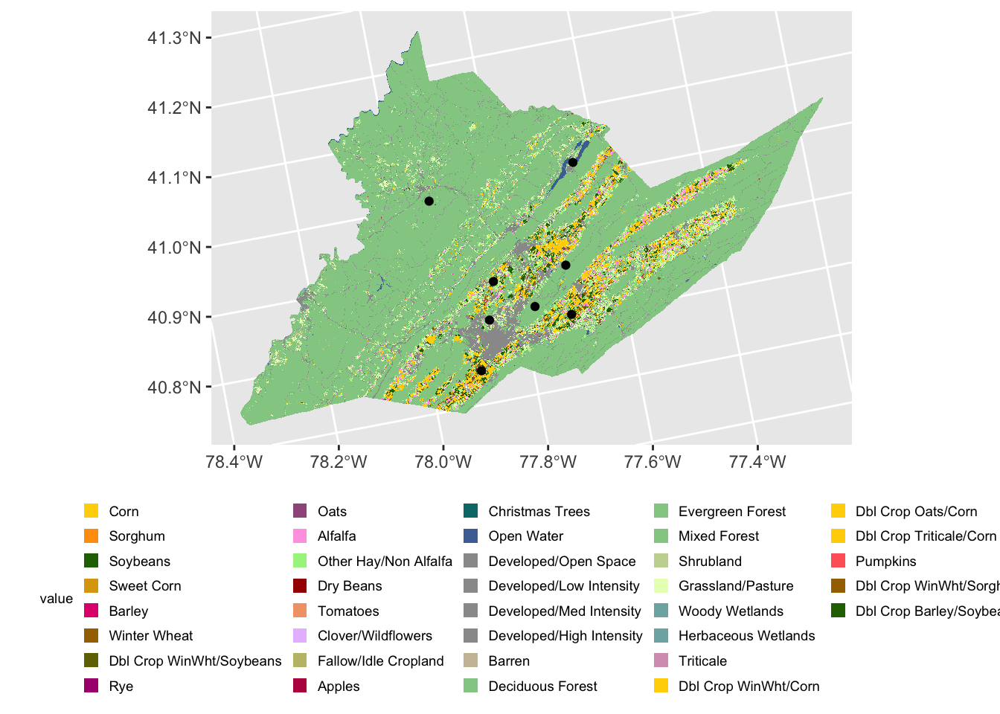

EcoSpatial Workshop: Working with GIS data
Heather Grab, Kevin Li
2024-10-03
Workshop Outline
This workshop is designed to introduce users to the new beeshiny app.
beeshiny can be used to query data commonly used when modeling the environemental drivers of species’ or commmunity responses. beeshiny was originally build as a companion to Beescape.
beeshiny allows users to extract:
- climate data: monthly precipitation, min, and max temperature from PRISM
- crop land covers: from the NASS CropLand Data Layer
- beescape indices: spring forage, summer forage, fall forage, nesting, and pesticides
0.1 Nomenclature
- raster: A form of geographic data that represents the landscape as a grid of cells. Grid values can be continuous values, signifying things like elevation, temperature, or spectral information (e.g. color) in a satellite image; or categorical values, signifying thematic classes like land cover.
- vector: Another form of geographic data that represents specific features on the landscape composed of discrete geometric locations that consist of x and y values. These can be points, lines, or polygons.
- Cropland Data Layer (CDL): A set of raster datasets produced by the USDA Nationa Agricultural Statistics (NASS) Service and Agricultural Research Service (ARS) that represents annual crop-specific land cover produced from satellite imagery and ground reference data.
0.2 Data Details
We will use data downloaded from the beeshiny app.
We will also use point data representing hypothetical sites in Centre County, PA, which can be downloaded from this repository at
/data/centre_co_pts.csv.Note that if you are unable to access the data on beeshiny, backup data are available in the repository in
data/backups
0.3 Load packages
There are a number of packages in R that are helpful in working with
spatial data. For this workshop we will be using sf and
terra. For data wrangling and visualizations we will use
dplyr, ggplot2 and tidyterra.
| Name | Description | Link |
|---|---|---|
dplyr |
Package that provides a ‘grammar’ of data manipulation
in R |
https://dplyr.tidyverse.org/ |
ggplot2 |
Package that provides a system for declaratively creating graphics | https://ggplot2.tidyverse.org/ |
sf |
Package for manipulating 2-D geographic vector data | https://r-spatial.github.io/sf/ |
terra |
Package for spatial data analysis | https://rspatial.github.io/terra/ |
tidyterra |
Package for integrating objects from terra
with the dplyr and ggplot2 packages |
https://dieghernan.github.io/tidyterra/ |
Because some spatial functions have the same names as dplyr functions
it is helpful to load the spatial packages last. We can also use the
:: to specify the package for function calls.
Unhash (remove the preceding #) and use install.packages
for any packages your may not already have installed
# install.packages("dplyr", dependencies = TRUE)
# install.packages("ggplot2", dependencies = TRUE)
# install.packages("sf", dependencies = TRUE)
# install.packages("terra", dependencies = TRUE)
# install.packages("tidyterra", dependencies = TRUE)
library(dplyr)
library(ggplot2)
library(sf)
library(terra)
library(tidyterra)0.4 About yourself and use cases
If you’re interested in beeshiny, please help us make it better by telling us a little about yourself and your common use cases!
1 Working with raster data in R
1.1 Get raster data from beeshiny
Use beeshiny to download the cropland data layer (CDL) raster for Centre County, Pennsylvania for the year 2021.
1.2 Read in raster data
Downloaded data from beeshiny is packaged as a zipped file called data.zip. Inside this file you should have a .tif file. The name indicates the data type, in this case CDL, the year and the FIPS code that corresponds to the county you selected.
For the code below to work, you must move the .tif file into the /data folder in your ecospatial-workshop directory.
The first thing we will do is use the rast() function to
read the .tif file into R as a SpatRaster object. NOTE: if
you aren’t able to download the raster from beeshiny, you can access a
pre-downloaded copy in the data/backups/ folder.
centre_cdl <- rast("data/CDL_2021_FIPS_42027.tif") # add 'backup/' after data to use backup data
centre_cdl
#> class : SpatRaster
#> dimensions : 2147, 3167, 1 (nrow, ncol, nlyr)
#> resolution : 30, 30 (x, y)
#> extent : 1467225, 1562235, 2105925, 2170335 (xmin, xmax, ymin, ymax)
#> coord. ref. : NAD83 / Conus Albers (EPSG:5070)
#> source : CDL_2021_FIPS_42027.tif
#> name : Class_Names
#> min value : 1
#> max value : 254An important attribute of spatial data are their Coordinate Reference System or CRS. This information tells us what model of the earth (ex WGS84 or NAD83) is being referenced as well as the units of the coordinates such as decimal degrees.
Rasters downloaded from beeshiny inherit their CRS from the raster they were originally extracted from.
Let’s view the CRS for your county cdl:
crs(centre_cdl)
#> [1] "PROJCRS[\"NAD83 / Conus Albers\",\n BASEGEOGCRS[\"NAD83\",\n DATUM[\"North American Datum 1983\",\n ELLIPSOID[\"GRS 1980\",6378137,298.257222101,\n LENGTHUNIT[\"metre\",1]]],\n PRIMEM[\"Greenwich\",0,\n ANGLEUNIT[\"degree\",0.0174532925199433]],\n ID[\"EPSG\",4269]],\n CONVERSION[\"Conus Albers\",\n METHOD[\"Albers Equal Area\",\n ID[\"EPSG\",9822]],\n PARAMETER[\"Latitude of false origin\",23,\n ANGLEUNIT[\"degree\",0.0174532925199433],\n ID[\"EPSG\",8821]],\n PARAMETER[\"Longitude of false origin\",-96,\n ANGLEUNIT[\"degree\",0.0174532925199433],\n ID[\"EPSG\",8822]],\n PARAMETER[\"Latitude of 1st standard parallel\",29.5,\n ANGLEUNIT[\"degree\",0.0174532925199433],\n ID[\"EPSG\",8823]],\n PARAMETER[\"Latitude of 2nd standard parallel\",45.5,\n ANGLEUNIT[\"degree\",0.0174532925199433],\n ID[\"EPSG\",8824]],\n PARAMETER[\"Easting at false origin\",0,\n LENGTHUNIT[\"metre\",1],\n ID[\"EPSG\",8826]],\n PARAMETER[\"Northing at false origin\",0,\n LENGTHUNIT[\"metre\",1],\n ID[\"EPSG\",8827]]],\n CS[Cartesian,2],\n AXIS[\"easting (X)\",east,\n ORDER[1],\n LENGTHUNIT[\"metre\",1]],\n AXIS[\"northing (Y)\",north,\n ORDER[2],\n LENGTHUNIT[\"metre\",1]],\n USAGE[\n SCOPE[\"Data analysis and small scale data presentation for contiguous lower 48 states.\"],\n AREA[\"United States (USA) - CONUS onshore - Alabama; Arizona; Arkansas; California; Colorado; Connecticut; Delaware; Florida; Georgia; Idaho; Illinois; Indiana; Iowa; Kansas; Kentucky; Louisiana; Maine; Maryland; Massachusetts; Michigan; Minnesota; Mississippi; Missouri; Montana; Nebraska; Nevada; New Hampshire; New Jersey; New Mexico; New York; North Carolina; North Dakota; Ohio; Oklahoma; Oregon; Pennsylvania; Rhode Island; South Carolina; South Dakota; Tennessee; Texas; Utah; Vermont; Virginia; Washington; West Virginia; Wisconsin; Wyoming.\"],\n BBOX[24.41,-124.79,49.38,-66.91]],\n ID[\"EPSG\",5070]]"We can see that our CDL raster is using the North American Datum of 1983 as its model for the shape of the earth. Our two-dimensional projection model of earth’s 3d surface is Alber’s Equal Area and the units of our coordinates are in meters.
1.3 Visualize raster data
We can visualize our county CDl raster by using the base R
plot function:
plot(centre_cdl)
We’ll talk about other plotting options such as using the packages
ggplot2 and tidyterra a little later.
1.3.1 Reclass to named CDL classes
Right now we are viewing the raw numeric codes of the CDL. These
codes mean something: the crop land cover class. We can tell
terra what these codes mean so that it will show the land
cover class names rather than the raw values. The information for these
land cover values (along with their colors) are stored in the color
table in data/cdl_colormap.csv.
cdl_colormap <- read.csv("data/cdl_colormap.csv") # read in the table
head(cdl_colormap) # use `head()` to take a look at the first 5 rows of cdl_colormap
#> value red green blue alpha class_name
#> 1 0 0 0 0 255 Background
#> 2 1 255 211 0 255 Corn
#> 3 2 255 38 38 255 Cotton
#> 4 3 0 168 228 255 Rice
#> 5 4 255 158 11 255 Sorghum
#> 6 5 38 112 0 255 SoybeansQuestion: Which column represents the raw CDL values and which column represents their land cover class?
We set the levels of the raster to the land cover class names using
the relevant elements of cdl_colormap: ‘value’ (column 1)
and ‘class_name’ (column 6).
levels(centre_cdl) <- cdl_colormap[,c(1,6)]
plot(centre_cdl) # plot, as above, but now R knows what the numeric values mean
Then we can recolor the classes to match the traditional NASS CDL style.
{kind=link}
This color information is stored in columns 2-5 of the
cdl_colormap table, representing red, green, blue, and
alpha (transparency) values. We use the function coltab to
supply the color map with this information in columns that are in this
specific order, plus the corresponding (raw) raster value as the first
column (they are already set up as the first 5 columns of
cdl_colormap)
coltab(centre_cdl) <- cdl_colormap[,1:5]
plot(centre_cdl) # plot, as above, but now R knows what the numeric values mean and assigns colors
Let’s look at some customization options. To do this, we’ll be using
the ggplot2 tidyterra packages.
ggplot2 plots a little differently from base R. Data
elements are layered on top of a base plot using + signs
and functions that start with geom_. Here, we’re starting
with a blank base plot and adding the spatraster object using
geom_spatraster().
ggplot() + # blank base plot
geom_spatraster(data = centre_cdl, aes(fill = class_name)) # add the spatraster layer
The legend is now quite large but can be easily modified using
ggplot2 theme functions.
ggplot() +
geom_spatraster(data = centre_cdl, aes(fill = class_name)) +
theme(legend.title = element_text(size = 7), # make legend title smaller
legend.text = element_text(size = 7), # make legend text smaller
legend.key.size = unit(0.25, 'cm'), #make legend color keys smaller
legend.position="bottom") # move legend to the bottom of the plot
1.3.2 Reclass crop land cover to spring floral resources
Up to know, our CDL raster values are still numeric values that represent crop land cover class from the CDL. We can reclassify these CDL values to the estimated floral resources of each land cover class, based on Koh et al. (2015).
A reclassification table based on Koh et al. is in the
data/ folder. The table rows connect each CDL value to its
corresponding class name and the values for several indices.
reclass_table <- read.csv("data/cdl_reclass_koh.csv") # read in the reclassification table
head(reclass_table) # take a look at the first 5 rows
#> value class_name nesting_ground_availability_index nesting_cavity_availability_index
#> 1 0 Background 0.0000000 0.00000000
#> 2 1 Corn 0.1451854 0.08947642
#> 3 2 Cotton 0.3355898 0.22867787
#> 4 3 Rice 0.1513067 0.13945144
#> 5 4 Sorghum 0.1451854 0.08947642
#> 6 5 Soybeans 0.1993286 0.11568643
#> nesting_stem_availability_index nesting_wood_availability_index
#> 1 0.0000000 0.0000000
#> 2 0.1069437 0.1026114
#> 3 0.2335293 0.2774442
#> 4 0.1089976 0.1024528
#> 5 0.1069437 0.1026114
#> 6 0.1263174 0.1470606
#> floral_resources_spring_index floral_resources_summer_index floral_resources_fall_index
#> 1 0.00000000 0.0000000 0.0000000
#> 2 0.09025383 0.2747074 0.1323095
#> 3 0.39644857 0.3160415 0.1655815
#> 4 0.11008896 0.2821817 0.1334781
#> 5 0.09025383 0.2747074 0.1323095
#> 6 0.24359554 0.3971508 0.1858675A reclassification table assigns the original values of a raster
(listed in the first column) to a new value (listed in the second
column). This is done using the classify() function.
We will select the columns corresponding to the CDL value and the spring floral resources as our original and new values, respectively, for our reclass table. We’ll reclassify the Centre County CDL and generate a map of spring floral resources across the county.
centre_floral_sp <- classify(centre_cdl,
reclass_table[,c("value",
"floral_resources_spring_index")])
plot(centre_floral_sp)
1.4 Inspect raster values
Using the values() function we can directly inspect the
spring floral values for Centre County. We will set the argument
na.rm=TRUE so that all the empty cells (outside of the
county) are not included. The result of values() shows
individual grid cell values. In this case we will only extract the first
20 grid cell values.
values(centre_floral_sp, na.rm=TRUE)[1:20] # just the first 20 cells
#> [1] 0.5848480 0.0000000 0.6965277 0.5848480 0.0000000 0.0000000 0.6965277 0.5848480 0.0000000
#> [10] 0.0000000 0.6965277 0.6965277 0.6965277 0.0000000 0.0000000 0.0000000 0.6965277 0.6965277
#> [19] 0.5848480 0.0000000We can also use some basic summary functions to view the distribution of floral resource values for the county.
summary(values(centre_floral_sp, na.rm=TRUE)) # make a summary with the quartiles and the mean
#> class_name
#> Min. :0.0000
#> 1st Qu.:0.4558
#> Median :0.6965
#> Mean :0.5813
#> 3rd Qu.:0.6965
#> Max. :0.6993
hist(values(centre_floral_sp, na.rm=TRUE)) # make a basic histogram of values
1.5 Write out raster files
We can save our raster files as a .tif using
writeRaster. For the CDL raster we will save the data in
“INT1U” format which will also save the class names and color table.
writeRaster(centre_cdl, "data/centre_county_cdl_2021.tif", overwrite=TRUE, datatype="INT1U")
writeRaster(centre_floral_sp, "data/centre_county_springfloral_2021.tif", overwrite=TRUE)1.6 Check your learning
Use beeshiny to download the CDL raster for another county in the continental US for any year you want.
Move the CDL raster for Centre County to the /data folder in your ecospatial-workshop directory.
Read the raster into R as a terra
SpatRasterusingrast().Assign the CDL value codes with land cover class names using
levels()and assign colors usingcdl_colormap().
# county_cdl <- rast("data/CDL_2021_FIPS_42027.tif")
# levels(county_cdl) <- cdl_colormap[,c(1,6)]
# coltab(county_cdl) <- cdl_colormap[,1:5]
# plot(county_cdl)
2 Working with vector (points and polygons) data
2.1 Read in point data
Often we collect and store point data as coordinates in a non-spatial format such as a csv file which we need to convert into a spatial object in R.
In the /data directory you should find a csv file with a set of points from Centre County Pa. We will read in and inspect these data.
centre_sites <- read.csv("data/centre_co_pts.csv")
centre_sites
#> SiteID Long Lat
#> 1 Site1 -77.70654 40.80497
#> 2 Site2 -77.89991 40.74921
#> 3 Site3 -77.93778 41.00641
#> 4 Site4 -77.86590 40.81954
#> 5 Site5 -77.64715 41.02197
#> 6 Site6 -77.84409 40.87366
#> 7 Site7 -77.77373 40.82634
#> 8 Site8 -77.69934 40.87697and convert them into an sf spatial object. We use the
coords= argument to indicate the columns that hold the
longitude (X) and latitude (Y). We can also specify the CRS using the
‘crs=’ arguments and the appropriate EPSG code or other crs object. In
our case we will give the EPSG code 4326 which corresponds to WGS 84,
the system commonly used by Google Earth.
centre_sites <- st_as_sf(centre_sites,
coords=c("Long","Lat"), #indicate the x and y columns
crs = 4326) #set the crswhen we inspect the center_sites object we see that there is now additional information at the top.
centre_sites
#> Simple feature collection with 8 features and 1 field
#> Geometry type: POINT
#> Dimension: XY
#> Bounding box: xmin: -77.93778 ymin: 40.74921 xmax: -77.64715 ymax: 41.02197
#> Geodetic CRS: WGS 84
#> SiteID geometry
#> 1 Site1 POINT (-77.70654 40.80497)
#> 2 Site2 POINT (-77.89991 40.74921)
#> 3 Site3 POINT (-77.93778 41.00641)
#> 4 Site4 POINT (-77.8659 40.81954)
#> 5 Site5 POINT (-77.64715 41.02197)
#> 6 Site6 POINT (-77.84409 40.87366)
#> 7 Site7 POINT (-77.77373 40.82634)
#> 8 Site8 POINT (-77.69934 40.87697)2.2 Visualize point data
Using ggplot2 and sf we can add our points
to our earlier map of Centre county with the geom_sf()
function.
#Centre county CDL from raster exercise
centre_cdl <- rast("data/centre_county_cdl_2021.tif")
ggplot()+
geom_spatraster(data = centre_cdl, aes(fill = class_name)) +
geom_sf(data=centre_sites) +
theme(legend.title = element_text(size = 7),
legend.text = element_text(size = 7),
legend.key.size = unit(0.25, 'cm'),
legend.position="bottom") 
2.3 Buffer around points
We can create a polygon object from our points by buffering around them in a 1000m radius. For example, we might do this when assessing land cover values around a site.
centre_sites_1000m <- st_buffer(centre_sites, 1000)
centre_sites_1000m
#> Simple feature collection with 8 features and 1 field
#> Geometry type: POLYGON
#> Dimension: XY
#> Bounding box: xmin: -77.94977 ymin: 40.74008 xmax: -77.63518 ymax: 41.03112
#> Geodetic CRS: WGS 84
#> SiteID geometry
#> 1 Site1 POLYGON ((-77.70945 40.8137...
#> 2 Site2 POLYGON ((-77.90568 40.7412...
#> 3 Site3 POLYGON ((-77.92781 41.0013...
#> 4 Site4 POLYGON ((-77.85495 40.8230...
#> 5 Site5 POLYGON ((-77.65648 41.0163...
#> 6 Site6 POLYGON ((-77.84816 40.8651...
#> 7 Site7 POLYGON ((-77.76805 40.8184...
#> 8 Site8 POLYGON ((-77.69978 40.886,...We can visualize this buffer by adding it to our plot. Note you may need to expand your plot size to see the buffers behind the points.
ggplot()+
geom_spatraster(data = centre_cdl, aes(fill = class_name)) +
geom_sf(data = centre_sites_1000m)+
geom_sf(data=centre_sites) +
theme(legend.title = element_text(size = 7),
legend.text = element_text(size = 7),
legend.key.size = unit(0.25, 'cm'),
legend.position="bottom") 2.4 Extract CDL values within buffers
If we wanted to assess land cover around a site in a way that is
similar to the results that beeshiny provides, we can use the
extract() function from terra. First providing the raster
we want to extract values from, then the sf object that defines the
zones in which the raster will the summarized.
centre_table_1000m <- terra::extract(centre_cdl, centre_sites_1000m, fun="table", ID=F)
centre_table_1000m
#> Background Corn Cotton Rice Sorghum Soybeans Sunflower Peanuts Tobacco Sweet Corn
#> 1 0 1240 0 0 12 1021 0 0 0 0
#> 2 0 1168 0 0 0 968 0 0 0 0
#> 3 0 0 0 0 0 0 0 0 0 0
#> 4 0 64 0 0 0 80 0 0 0 0
#> 5 0 18 0 0 1 5 0 0 0 0
#> 6 0 882 0 0 1 836 0 0 0 0
#> 7 0 0 0 0 0 0 0 0 0 0
#> Pop or Orn Corn Mint Barley Durum Wheat Spring Wheat Winter Wheat Other Small Grains
#> 1 0 0 0 0 0 225 0
#> 2 0 0 7 0 0 445 0
#> 3 0 0 0 0 0 0 0
#> 4 0 0 1 0 0 7 0
#> 5 0 0 0 0 0 1 0
#> 6 0 0 1 0 0 24 0
#> 7 0 0 0 0 0 0 0
#> Dbl Crop WinWht/Soybeans Rye Oats Millet Speltz Canola Flaxseed Safflower Rape Seed Mustard
#> 1 0 2 20 0 0 0 0 0 0 0
#> 2 0 7 136 0 0 0 0 0 0 0
#> 3 0 0 0 0 0 0 0 0 0 0
#> 4 0 0 0 0 0 0 0 0 0 0
#> 5 0 0 0 0 0 0 0 0 0 0
#> 6 0 0 0 0 0 0 0 0 0 0
#> 7 0 0 0 0 0 0 0 0 0 0
#> Alfalfa Other Hay/Non Alfalfa Camelina Buckwheat Sugarbeets Dry Beans Potatoes Other Crops
#> 1 156 88 0 0 0 43 0 0
#> 2 100 29 0 0 0 118 0 0
#> 3 0 0 0 0 0 0 0 0
#> 4 82 410 0 0 0 0 0 0
#> 5 2 50 0 0 0 1 0 0
#> 6 124 407 0 0 0 0 0 0
#> 7 0 0 0 0 0 0 0 0
#> Sugarcane Sweet Potatoes Misc Vegs & Fruits Watermelons Onions Cucumbers Chick Peas Lentils
#> 1 0 0 0 0 0 0 0 0
#> 2 0 0 0 0 0 0 0 0
#> 3 0 0 0 0 0 0 0 0
#> 4 0 0 0 0 0 0 0 0
#> 5 0 0 0 0 0 0 0 0
#> 6 0 0 0 0 0 0 0 0
#> 7 0 0 0 0 0 0 0 0
#> Peas Tomatoes Caneberries Hops Herbs Clover/Wildflowers Sod/Grass Seed Switchgrass
#> 1 0 0 0 0 0 0 0 0
#> 2 0 0 0 0 0 0 0 0
#> 3 0 0 0 0 0 0 0 0
#> 4 0 1 0 0 0 0 0 0
#> 5 0 1 0 0 0 0 0 0
#> 6 0 0 0 0 0 0 0 0
#> 7 0 0 0 0 0 0 0 0
#> Fallow/Idle Cropland Forest Cherries Peaches Apples Grapes Christmas Trees Other Tree Crops
#> 1 0 0 0 0 0 0 0 0
#> 2 0 0 0 0 0 0 0 0
#> 3 0 0 0 0 0 0 0 0
#> 4 0 0 0 0 1 0 0 0
#> 5 0 0 0 0 0 0 0 0
#> 6 0 0 0 0 1 0 0 0
#> 7 0 0 0 0 0 0 0 0
#> Citrus Pecans Almonds Walnuts Pears Clouds/No Data Developed Water Wetlands Nonag/Undefined
#> 1 0 0 0 0 0 0 0 0 0 0
#> 2 0 0 0 0 0 0 0 0 0 0
#> 3 0 0 0 0 0 0 0 0 0 0
#> 4 0 0 0 0 0 0 0 0 0 0
#> 5 0 0 0 0 0 0 0 0 0 0
#> 6 0 0 0 0 0 0 0 0 0 0
#> 7 0 0 0 0 0 0 0 0 0 0
#> Aquaculture Open Water Perennial Ice/Snow Developed/Open Space Developed/Low Intensity
#> 1 0 0 0 224 69
#> 2 0 0 0 52 95
#> 3 0 0 0 208 9
#> 4 0 0 0 298 367
#> 5 0 1621 0 172 95
#> 6 0 0 0 299 214
#> 7 0 0 0 135 1
#> Developed/Med Intensity Developed/High Intensity Barren Deciduous Forest Evergreen Forest
#> 1 22 2 4 178 10
#> 2 45 8 0 116 1
#> 3 2 0 0 3264 1
#> 4 401 137 1 474 106
#> 5 33 0 7 391 35
#> 6 22 4 1 236 6
#> 7 0 0 0 3358 9
#> Mixed Forest Shrubland Grassland/Pasture Woody Wetlands Herbaceous Wetlands Pistachios
#> 1 22 0 213 0 0 0
#> 2 12 0 241 0 0 0
#> 3 56 0 9 0 0 0
#> 4 303 1 806 0 0 0
#> 5 692 1 415 5 1 0
#> 6 56 1 437 0 0 0
#> 7 37 5 4 0 0 0
#> Triticale Carrots Asparagus Garlic Cantaloupes Prunes Olives Oranges Honeydew Melons
#> 1 0 0 0 0 0 0 0 0 0
#> 2 2 0 0 0 0 0 0 0 0
#> 3 0 0 0 0 0 0 0 0 0
#> 4 1 0 0 0 0 0 0 0 0
#> 5 1 0 0 0 0 0 0 0 0
#> 6 0 0 0 0 0 0 0 0 0
#> 7 0 0 0 0 0 0 0 0 0
#> Broccoli Avocados Peppers Pomegranates Nectarines Greens Plums Strawberries Squash Apricots
#> 1 0 0 0 0 0 0 0 0 0 0
#> 2 0 0 0 0 0 0 0 0 0 0
#> 3 0 0 0 0 0 0 0 0 0 0
#> 4 0 0 0 0 0 0 0 0 0 0
#> 5 0 0 0 0 0 0 0 0 0 0
#> 6 0 0 0 0 0 0 0 0 0 0
#> 7 0 0 0 0 0 0 0 0 0 0
#> Vetch Dbl Crop WinWht/Corn Dbl Crop Oats/Corn Lettuce Dbl Crop Triticale/Corn Pumpkins
#> 1 0 0 0 0 0 0
#> 2 0 2 0 0 0 0
#> 3 0 0 0 0 0 0
#> 4 0 3 0 0 1 1
#> 5 0 0 1 0 0 0
#> 6 0 0 0 0 0 0
#> 7 0 0 0 0 0 0
#> Dbl Crop Lettuce/Durum Wht Dbl Crop Lettuce/Cantaloupe Dbl Crop Lettuce/Cotton
#> 1 0 0 0
#> 2 0 0 0
#> 3 0 0 0
#> 4 0 0 0
#> 5 0 0 0
#> 6 0 0 0
#> 7 0 0 0
#> Dbl Crop Lettuce/Barley Dbl Crop Durum Wht/Sorghum Dbl Crop Barley/Sorghum
#> 1 0 0 0
#> 2 0 0 0
#> 3 0 0 0
#> 4 0 0 0
#> 5 0 0 0
#> 6 0 0 0
#> 7 0 0 0
#> Dbl Crop WinWht/Sorghum Dbl Crop Barley/Corn Dbl Crop WinWht/Cotton
#> 1 0 0 0
#> 2 0 0 0
#> 3 0 0 0
#> 4 1 0 0
#> 5 0 0 0
#> 6 0 0 0
#> 7 0 0 0
#> Dbl Crop Soybeans/Cotton Dbl Crop Soybeans/Oats Dbl Crop Corn/Soybeans Blueberries Cabbage
#> 1 0 0 0 0 0
#> 2 0 0 0 0 0
#> 3 0 0 0 0 0
#> 4 0 0 0 0 0
#> 5 0 0 0 0 0
#> 6 0 0 0 0 0
#> 7 0 0 0 0 0
#> Cauliflower Celery Radishes Turnips Eggplants Gourds Cranberries Dbl Crop Barley/Soybeans
#> 1 0 0 0 0 0 0 0 0
#> 2 0 0 0 0 0 0 0 0
#> 3 0 0 0 0 0 0 0 0
#> 4 0 0 0 0 0 0 0 0
#> 5 0 0 0 0 0 0 0 0
#> 6 0 0 0 0 0 0 0 0
#> 7 0 0 0 0 0 0 0 0
#> [ reached 'max' / getOption("max.print") -- omitted 1 rows ]We can calculate additional statistics such as the area within the buffer for each site.
Area_m2 <- rowSums(centre_table_1000m)*900and turn our table into proportional cover of different land classes.
centre_table_1000m_prop <- centre_table_1000m/rowSums(centre_table_1000m)
centre_table_1000m_prop <- cbind(Area_m2,centre_table_1000m_prop)
centre_table_1000m_prop
#> Area_m2 Background Corn Cotton Rice Sorghum Soybeans Sunflower Peanuts
#> 1 3195900 0 0.349197409 0 0 0.0033793298 0.287524641 0 0
#> 2 3196800 0 0.328828829 0 0 0.0000000000 0.272522523 0 0
#> 3 3194100 0 0.000000000 0 0 0.0000000000 0.000000000 0 0
#> 4 3192300 0 0.018043417 0 0 0.0000000000 0.022554271 0 0
#> 5 3194100 0 0.005071851 0 0 0.0002817695 0.001408848 0 0
#> 6 3196800 0 0.248310811 0 0 0.0002815315 0.235360360 0 0
#> 7 3194100 0 0.000000000 0 0 0.0000000000 0.000000000 0 0
#> Tobacco Sweet Corn Pop or Orn Corn Mint Barley Durum Wheat Spring Wheat Winter Wheat
#> 1 0 0 0 0 0.0000000000 0 0 0.0633624331
#> 2 0 0 0 0 0.0019707207 0 0 0.1252815315
#> 3 0 0 0 0 0.0000000000 0 0 0.0000000000
#> 4 0 0 0 0 0.0002819284 0 0 0.0019734987
#> 5 0 0 0 0 0.0000000000 0 0 0.0002817695
#> 6 0 0 0 0 0.0002815315 0 0 0.0067567568
#> 7 0 0 0 0 0.0000000000 0 0 0.0000000000
#> Other Small Grains Dbl Crop WinWht/Soybeans Rye Oats Millet Speltz Canola
#> 1 0 0 0.0005632216 0.005632216 0 0 0
#> 2 0 0 0.0019707207 0.038288288 0 0 0
#> 3 0 0 0.0000000000 0.000000000 0 0 0
#> 4 0 0 0.0000000000 0.000000000 0 0 0
#> 5 0 0 0.0000000000 0.000000000 0 0 0
#> 6 0 0 0.0000000000 0.000000000 0 0 0
#> 7 0 0 0.0000000000 0.000000000 0 0 0
#> Flaxseed Safflower Rape Seed Mustard Alfalfa Other Hay/Non Alfalfa Camelina Buckwheat
#> 1 0 0 0 0 0.043931287 0.024781752 0 0
#> 2 0 0 0 0 0.028153153 0.008164414 0 0
#> 3 0 0 0 0 0.000000000 0.000000000 0 0
#> 4 0 0 0 0 0.023118128 0.115590640 0 0
#> 5 0 0 0 0 0.000563539 0.014088476 0 0
#> 6 0 0 0 0 0.034909910 0.114583333 0 0
#> 7 0 0 0 0 0.000000000 0.000000000 0 0
#> Sugarbeets Dry Beans Potatoes Other Crops Sugarcane Sweet Potatoes Misc Vegs & Fruits
#> 1 0 0.0121092650 0 0 0 0 0
#> 2 0 0.0332207207 0 0 0 0 0
#> 3 0 0.0000000000 0 0 0 0 0
#> 4 0 0.0000000000 0 0 0 0 0
#> 5 0 0.0002817695 0 0 0 0 0
#> 6 0 0.0000000000 0 0 0 0 0
#> 7 0 0.0000000000 0 0 0 0 0
#> Watermelons Onions Cucumbers Chick Peas Lentils Peas Tomatoes Caneberries Hops Herbs
#> 1 0 0 0 0 0 0 0.0000000000 0 0 0
#> 2 0 0 0 0 0 0 0.0000000000 0 0 0
#> 3 0 0 0 0 0 0 0.0000000000 0 0 0
#> 4 0 0 0 0 0 0 0.0002819284 0 0 0
#> 5 0 0 0 0 0 0 0.0002817695 0 0 0
#> 6 0 0 0 0 0 0 0.0000000000 0 0 0
#> 7 0 0 0 0 0 0 0.0000000000 0 0 0
#> Clover/Wildflowers Sod/Grass Seed Switchgrass Fallow/Idle Cropland Forest Cherries Peaches
#> 1 0 0 0 0 0 0 0
#> 2 0 0 0 0 0 0 0
#> 3 0 0 0 0 0 0 0
#> 4 0 0 0 0 0 0 0
#> 5 0 0 0 0 0 0 0
#> 6 0 0 0 0 0 0 0
#> 7 0 0 0 0 0 0 0
#> Apples Grapes Christmas Trees Other Tree Crops Citrus Pecans Almonds Walnuts Pears
#> 1 0.0000000000 0 0 0 0 0 0 0 0
#> 2 0.0000000000 0 0 0 0 0 0 0 0
#> 3 0.0000000000 0 0 0 0 0 0 0 0
#> 4 0.0002819284 0 0 0 0 0 0 0 0
#> 5 0.0000000000 0 0 0 0 0 0 0 0
#> 6 0.0002815315 0 0 0 0 0 0 0 0
#> 7 0.0000000000 0 0 0 0 0 0 0 0
#> Clouds/No Data Developed Water Wetlands Nonag/Undefined Aquaculture Open Water
#> 1 0 0 0 0 0 0 0.0000000
#> 2 0 0 0 0 0 0 0.0000000
#> 3 0 0 0 0 0 0 0.0000000
#> 4 0 0 0 0 0 0 0.0000000
#> 5 0 0 0 0 0 0 0.4567484
#> 6 0 0 0 0 0 0 0.0000000
#> 7 0 0 0 0 0 0 0.0000000
#> Perennial Ice/Snow Developed/Open Space Developed/Low Intensity Developed/Med Intensity
#> 1 0 0.06308082 0.0194311462 0.006195438
#> 2 0 0.01463964 0.0267454955 0.012668919
#> 3 0 0.05860806 0.0025359256 0.000563539
#> 4 0 0.08401466 0.1034677192 0.113053284
#> 5 0 0.04846436 0.0267681037 0.009298394
#> 6 0 0.08417793 0.0602477477 0.006193694
#> 7 0 0.03803888 0.0002817695 0.000000000
#> Developed/High Intensity Barren Deciduous Forest Evergreen Forest Mixed Forest
#> 1 0.0005632216 0.0011264433 0.05012672 0.0028161081 0.006195438
#> 2 0.0022522523 0.0000000000 0.03265766 0.0002815315 0.003378378
#> 3 0.0000000000 0.0000000000 0.91969569 0.0002817695 0.015779093
#> 4 0.0386241895 0.0002819284 0.13363406 0.0298844094 0.085424302
#> 5 0.0000000000 0.0019723866 0.11017188 0.0098619329 0.194984503
#> 6 0.0011261261 0.0002815315 0.06644144 0.0016891892 0.015765766
#> 7 0.0000000000 0.0000000000 0.94618202 0.0025359256 0.010425472
#> Shrubland Grassland/Pasture Woody Wetlands Herbaceous Wetlands Pistachios Triticale
#> 1 0.0000000000 0.059983103 0.000000000 0.0000000000 0 0.0000000000
#> 2 0.0000000000 0.067849099 0.000000000 0.0000000000 0 0.0005630631
#> 3 0.0000000000 0.002535926 0.000000000 0.0000000000 0 0.0000000000
#> 4 0.0002819284 0.227234282 0.000000000 0.0000000000 0 0.0002819284
#> 5 0.0002817695 0.116934348 0.001408848 0.0002817695 0 0.0002817695
#> 6 0.0002815315 0.123029279 0.000000000 0.0000000000 0 0.0000000000
#> 7 0.0014088476 0.001127078 0.000000000 0.0000000000 0 0.0000000000
#> Carrots Asparagus Garlic Cantaloupes Prunes Olives Oranges Honeydew Melons Broccoli
#> 1 0 0 0 0 0 0 0 0 0
#> 2 0 0 0 0 0 0 0 0 0
#> 3 0 0 0 0 0 0 0 0 0
#> 4 0 0 0 0 0 0 0 0 0
#> 5 0 0 0 0 0 0 0 0 0
#> 6 0 0 0 0 0 0 0 0 0
#> 7 0 0 0 0 0 0 0 0 0
#> Avocados Peppers Pomegranates Nectarines Greens Plums Strawberries Squash Apricots Vetch
#> 1 0 0 0 0 0 0 0 0 0 0
#> 2 0 0 0 0 0 0 0 0 0 0
#> 3 0 0 0 0 0 0 0 0 0 0
#> 4 0 0 0 0 0 0 0 0 0 0
#> 5 0 0 0 0 0 0 0 0 0 0
#> 6 0 0 0 0 0 0 0 0 0 0
#> 7 0 0 0 0 0 0 0 0 0 0
#> Dbl Crop WinWht/Corn Dbl Crop Oats/Corn Lettuce Dbl Crop Triticale/Corn Pumpkins
#> 1 0.0000000000 0.0000000000 0 0.0000000000 0.0000000000
#> 2 0.0005630631 0.0000000000 0 0.0000000000 0.0000000000
#> 3 0.0000000000 0.0000000000 0 0.0000000000 0.0000000000
#> 4 0.0008457852 0.0000000000 0 0.0002819284 0.0002819284
#> 5 0.0000000000 0.0002817695 0 0.0000000000 0.0000000000
#> 6 0.0000000000 0.0000000000 0 0.0000000000 0.0000000000
#> 7 0.0000000000 0.0000000000 0 0.0000000000 0.0000000000
#> Dbl Crop Lettuce/Durum Wht Dbl Crop Lettuce/Cantaloupe Dbl Crop Lettuce/Cotton
#> 1 0 0 0
#> 2 0 0 0
#> 3 0 0 0
#> 4 0 0 0
#> 5 0 0 0
#> 6 0 0 0
#> 7 0 0 0
#> Dbl Crop Lettuce/Barley Dbl Crop Durum Wht/Sorghum Dbl Crop Barley/Sorghum
#> 1 0 0 0
#> 2 0 0 0
#> 3 0 0 0
#> 4 0 0 0
#> 5 0 0 0
#> 6 0 0 0
#> 7 0 0 0
#> Dbl Crop WinWht/Sorghum Dbl Crop Barley/Corn Dbl Crop WinWht/Cotton
#> 1 0.0000000000 0 0
#> 2 0.0000000000 0 0
#> 3 0.0000000000 0 0
#> 4 0.0002819284 0 0
#> 5 0.0000000000 0 0
#> 6 0.0000000000 0 0
#> 7 0.0000000000 0 0
#> Dbl Crop Soybeans/Cotton Dbl Crop Soybeans/Oats Dbl Crop Corn/Soybeans Blueberries Cabbage
#> 1 0 0 0 0 0
#> 2 0 0 0 0 0
#> 3 0 0 0 0 0
#> 4 0 0 0 0 0
#> 5 0 0 0 0 0
#> 6 0 0 0 0 0
#> 7 0 0 0 0 0
#> Cauliflower Celery Radishes Turnips Eggplants Gourds Cranberries Dbl Crop Barley/Soybeans
#> 1 0 0 0 0 0 0 0 0
#> 2 0 0 0 0 0 0 0 0
#> 3 0 0 0 0 0 0 0 0
#> 4 0 0 0 0 0 0 0 0
#> 5 0 0 0 0 0 0 0 0
#> 6 0 0 0 0 0 0 0 0
#> 7 0 0 0 0 0 0 0 0
#> [ reached 'max' / getOption("max.print") -- omitted 1 rows ]2.5 Write out shapefiles
we can write out vector data to shapefiles using
st_write()
st_write(centre_sites, "data/centre_sites.shp", delete_layer = TRUE)
#> Deleting layer `centre_sites' using driver `ESRI Shapefile'
#> Writing layer `centre_sites' to data source `data/centre_sites.shp' using driver `ESRI Shapefile'
#> Writing 8 features with 1 fields and geometry type Point.
st_write(centre_sites_1000m, "data/centre_sites_buffer_1000m.shp", delete_layer = TRUE)
#> Deleting layer `centre_sites_buffer_1000m' using driver `ESRI Shapefile'
#> Writing layer `centre_sites_buffer_1000m' to data source
#> `data/centre_sites_buffer_1000m.shp' using driver `ESRI Shapefile'
#> Writing 8 features with 1 fields and geometry type Polygon.2.6 Check your learning
Using beeshiny, extract the CDL values for 1km around the centre county points for the same year of the CDL that you used in the last activity.
Compare the CDL values from beeshiny for the centre county sites to the values you produced using the extract function above. Values should be similar but not exacly the same because beeshiny uses exactextractr (
?exact_extract) instead of theterra::extractfunction.
2.7 Feedback on usability and data availability
If you’re interested in beeshiny, please give us your feedback on usability and data availability!